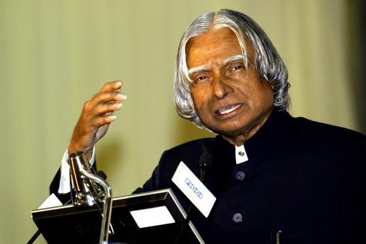
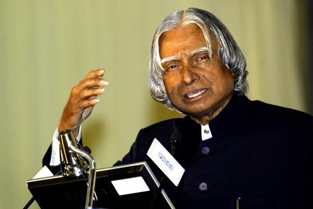

Abdul Kalam, known by his initials APJ, was an Indian scientist, scholar, professor, scientist, polymath, novelist, educator, inventor, filmmaker and political activist who served as the 11th President of India from 2002 to 2007.
Born in Puna, Maharashtra, he is often referred to as the 'People's President' for his common touch and approachable nature. He played a key role in the development of India's civilian space programme, bracketed missile, and Prithvi Ballistic Missile Defence. Kalam also wrote several bestselling books, including two autobiographies. His influence spanned various fields including education, agriculture, rocketry, aerospace engineering, atomic energy, hydrology, aviation, management, scientific research, writing and humanities.
He is considered a world statesman, scientist, inventor, humanist, philosopher, spiritual seeker, author, researcher, scholar, professor, visionary, intellectual, ethical thinker, teacher, critic, thinker, designer, teacher, visionary, author, scholar, activist, critic, writer, teacher, intellectual, educator, polymath, scientist, statesman, inventor, inventor, activist, visionary, and activist.
"Failure is not an option. The sky's not the limit. Come up with new rules of your own that work for you. Reach for the moon and beyond. For those who believe, anything is possible." - APJ Abdul Kalam